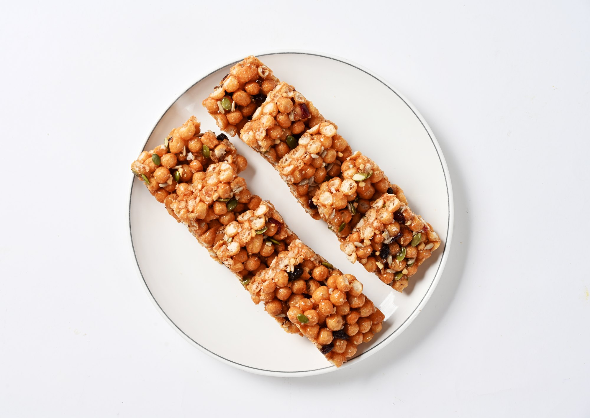
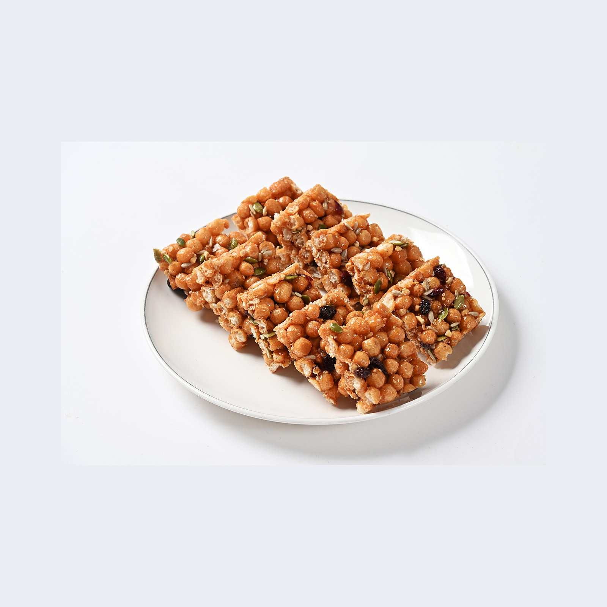
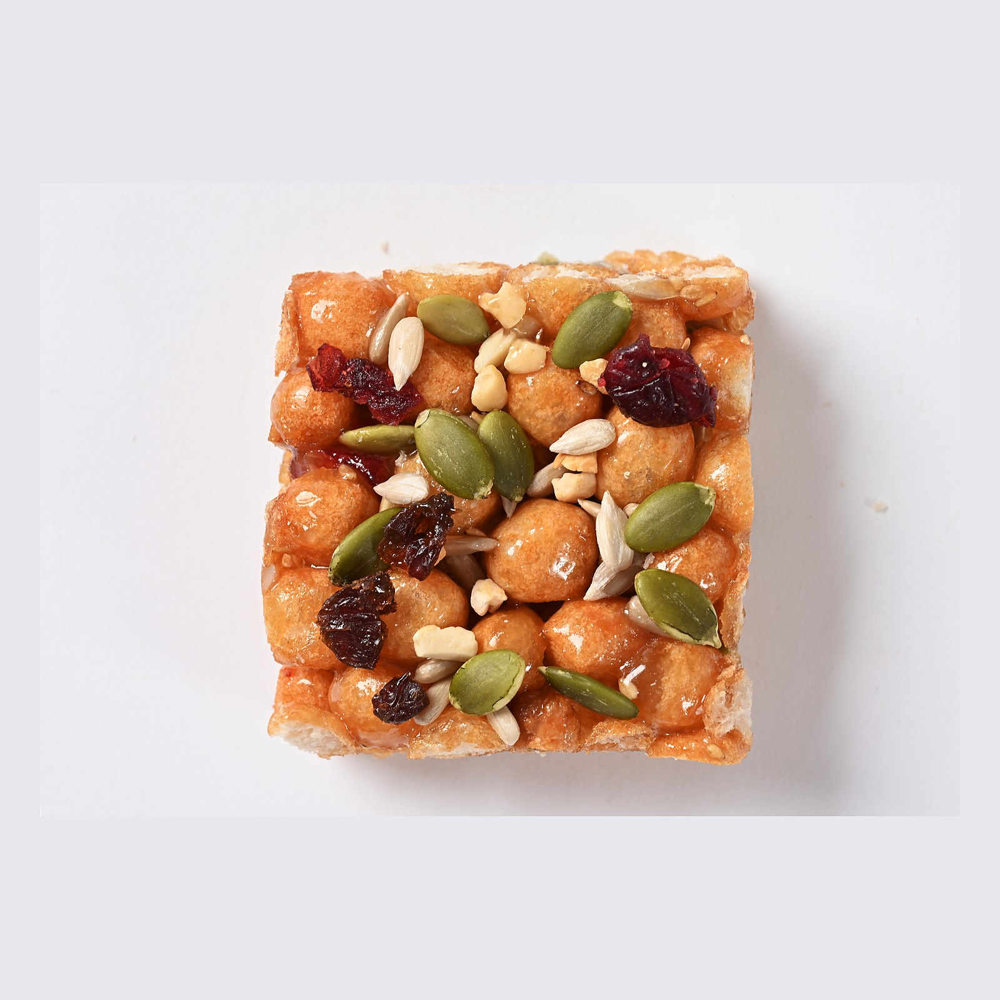
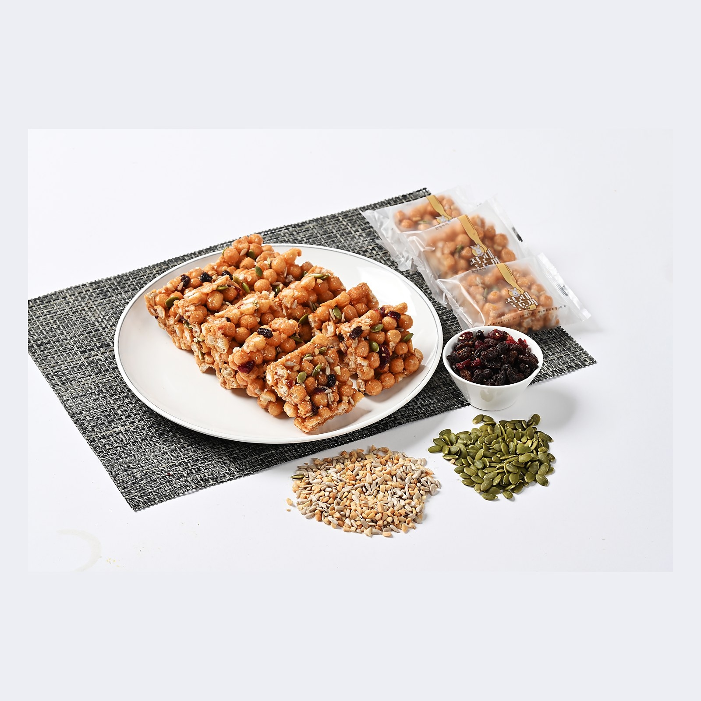
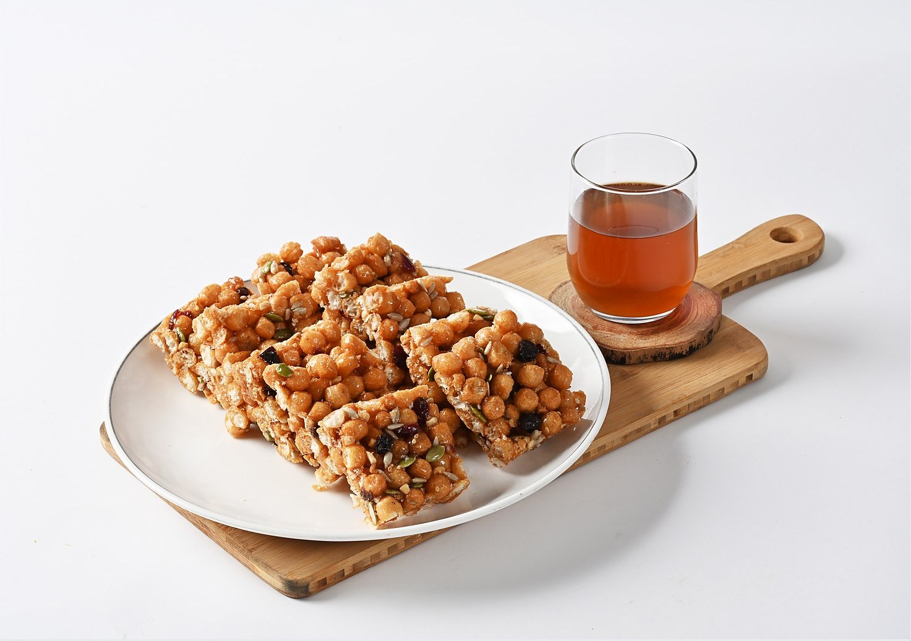
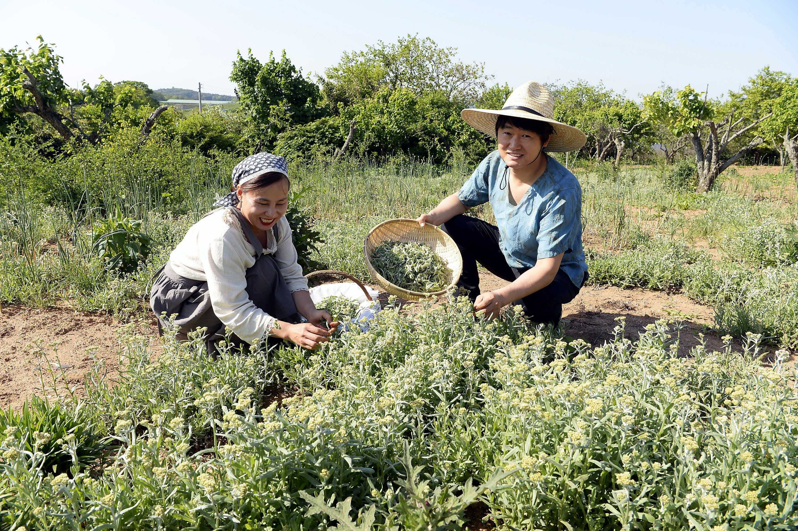
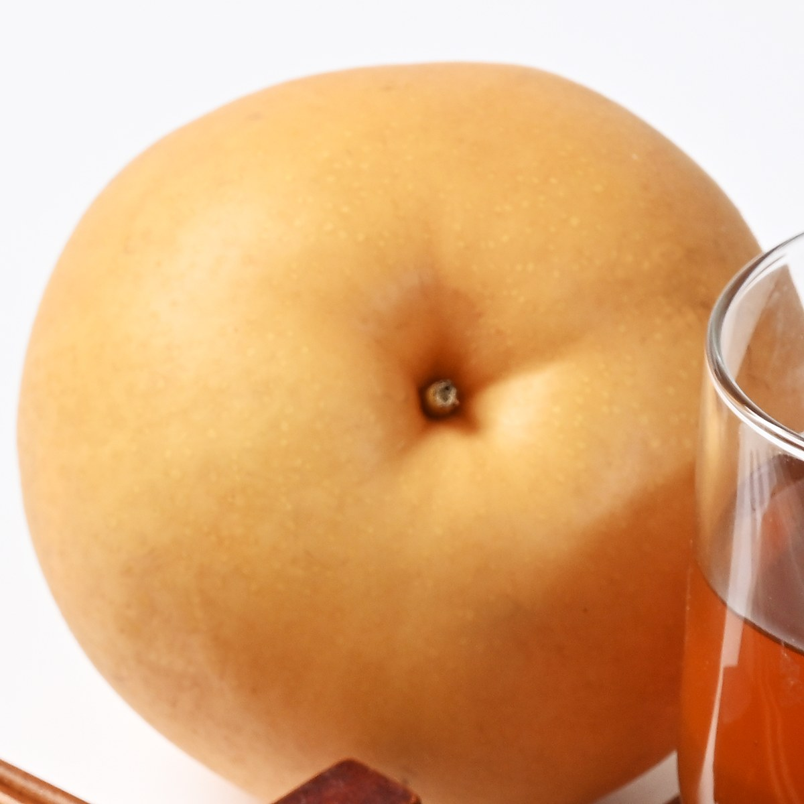
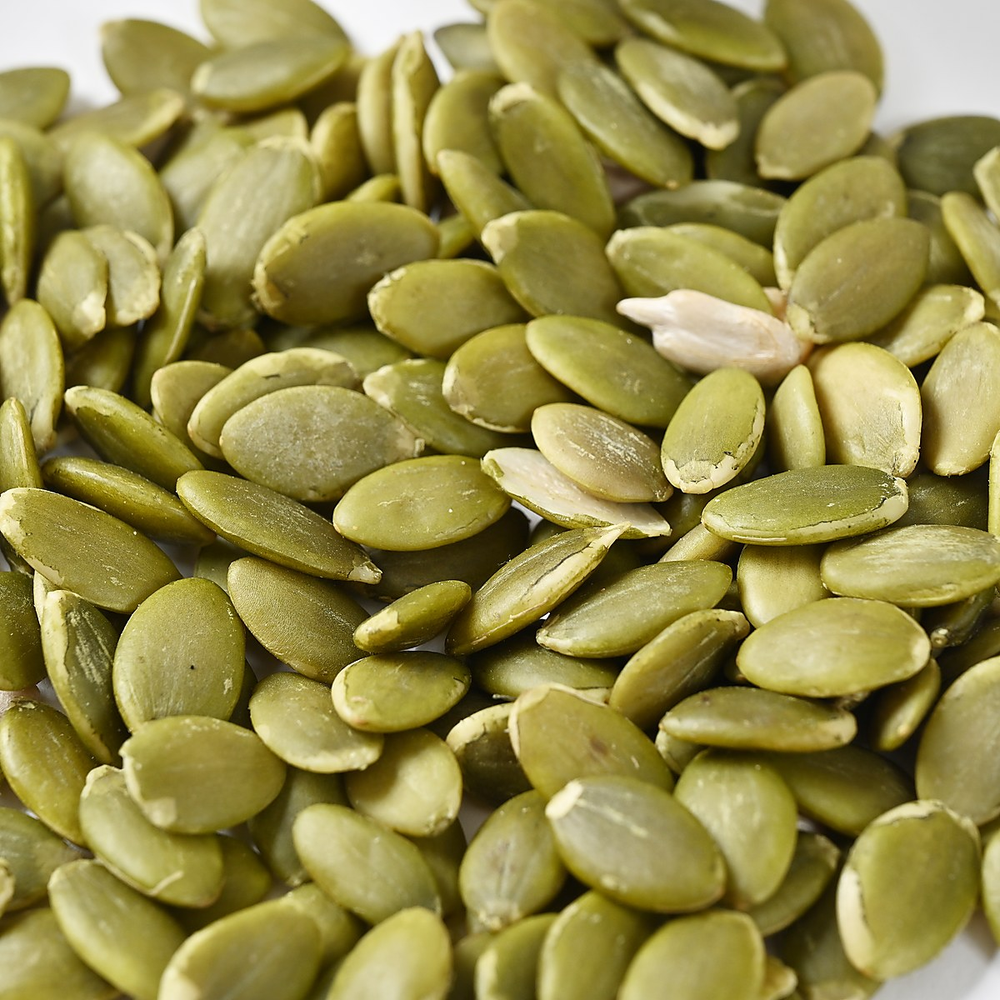
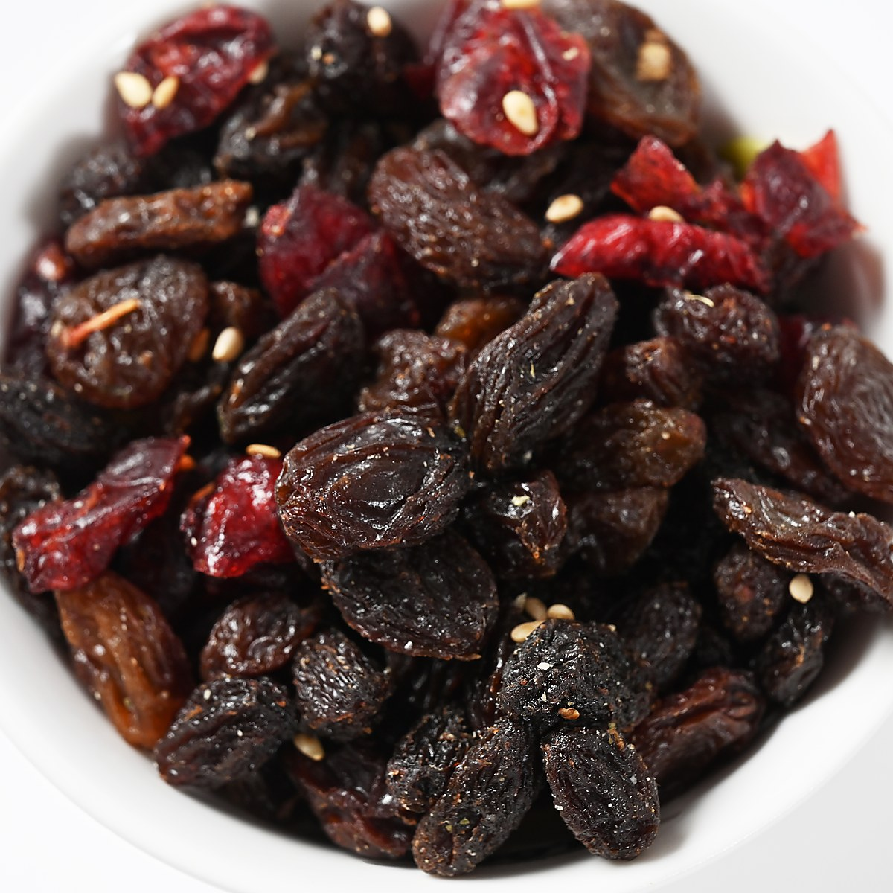
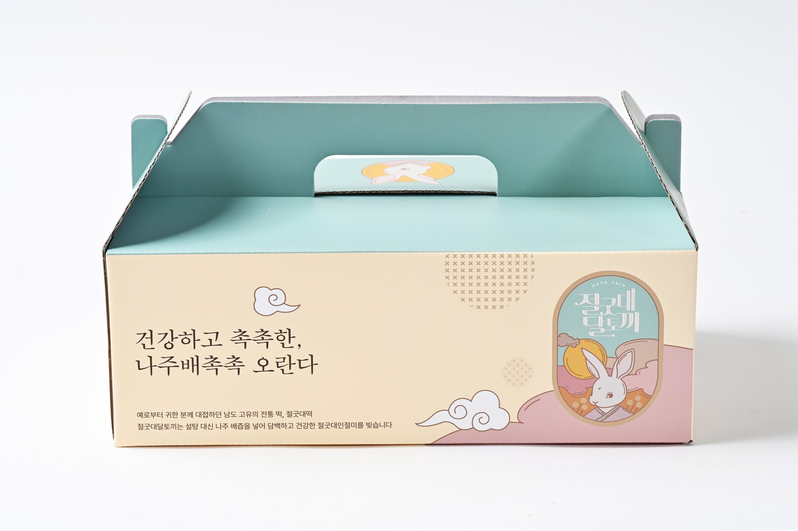

나주배즙 · 여섯 가지 견과 · 낱개 포장
겉은 바삭, 속은 촉촉
나주배 촉촉오란다
나주배즙으로 반죽해 겉은 바삭하고 속은 촉촉합니다. 절굿대 분말을 넣고 여섯 가지 견과를 더해 씹을수록 고소합니다.
촉촉오란다를 고르는 이유
넷만 기억하시면
됩니다
01
나주배즙으로 반죽
나주 배로 낸 즙을 반죽에 넣어, 겉은 바삭해도 속은 촉촉합니다.
02
여섯 가지 견과
볶은깨 · 땅콩 · 해바라기씨 · 호박씨 · 크랜베리 · 건포도. 씹을수록 고소합니다.
03
넣지 않습니다
합성첨가물 · 색소 · 방부제 없이 만듭니다.
04
한 개씩 포장
바삭함이 오래가고, 나눠 드리기 좋습니다.

겉은 바삭, 속은 촉촉한 수제 오란다
촉촉함은 나주배즙, 고소함은 여섯 가지 견과, 초록 점은 절굿대입니다.
6가지
견과와 씨앗, 말린 열매
20개
한 상자, 약 1,700g
1개씩
낱개 포장
나주배 촉촉오란다
쪼개면 견과가
단면에 드러납니다
튀긴 콩알 사이사이에 호박씨와 건조베리가 박혀 있습니다. 바삭하게 굳힌 겉과 달리 속은 촉촉해, 씹으면 쫀득하게 늘어납니다.



“겉바속촉, 쫀득한 식감.” — 구매 고객 후기 영상 중에서
이야기
절굿대떡 집이 만든
오란다
50년 만에 절굿대떡을 되살린 나주의 떡집입니다. 떡에 넣는 절굿대를 오란다에도 분말로 넣고, 단맛은 나주 배즙으로 냅니다. 떡과 함께 선물 상자에 담아 답례품과 명절 선물로 나갑니다.

절굿대 밭의 두 사람. 떡에 넣는 절굿대를 오란다에도 넣습니다.
재료
넣지 않는 것으로
말합니다
합성첨가물과 색소, 방부제를 넣지 않습니다. 촉촉함은 나주배즙에서, 고소함은 견과에서 옵니다.

나주배
즙으로 반죽에

호박씨
여섯 견과 중 하나

크랜베리
새콤한 점
넣는 것
나주배즙 · 절굿대 분말 · 튀긴 콩 · 볶은깨 · 땅콩 · 해바라기씨 · 호박씨 · 크랜베리 · 건포도
넣지 않는 것
합성첨가물 · 색소 · 방부제
맛있게 드시는 법
받으신 날엔 그대로,
남으면 냉장·냉동
받으신 날
그대로 드세요
상온에서도 괜찮지만, 냉장하면 더 바삭합니다.
남으면
냉장 · 냉동
낱개 포장 그대로 보관합니다. 유통기한은 낱개 포장에 적혀 있습니다.
냉동했다면
30분 전 상온에
또는 전자레인지 15초. 속이 다시 촉촉해집니다.
포장과 배송
한 개씩 싸서,
상자에 담아
낱개 포장이라 바삭함이 오래가고, 여럿이 나눠 드시기 좋습니다. 달토끼 상자에 담고, 원하시면 보자기로 한 번 더 쌉니다.

선물 상자 · 달토끼 상자에 담아

보자기 · 예단·이바지에
제품정보
제품명
나주배 촉촉오란다
가격
25,000원 (1박스 · 20개)
내용량
20개입 · 약 1,700g
식품유형
과자(유탕처리식품)
원재료
퍼핑콩(소맥분: 미국·호주·캐나다 등), 미강유(콩 100%: 미국·브라질), 설탕, 버터(국산), 조청(국산), 물엿(옥수수 100%: 러시아·헝가리), 호박씨(중국산), 해바라기씨(중국산), 크랜베리·건포도(미국산), 볶은깨(인도산), 땅콩(국내산), 수제 배즙(국내산)
포장
낱개 포장 · 상자
제조일·유통기한
상시 제조 · 낱개 포장에 표시
주의
특정 원재료에 알레르기가 있는 경우 원재료를 확인한 후 드세요. 알레르기 유발 성분을 사용한 제품과 같은 제조시설에서 만듭니다.
보관방법
냉장 · 냉동 보관 권장 (상온 보관 가능)
배송 방법
택배 · 배송비 3,500원
인증
사회적기업 제2023-247호 · 고향사랑 답례품(2024) · 상표등록 제40-2515456호(2026)
제조원
농업회사법인 주식회사 절굿대
소재지
전라남도 나주시 징고샅길 7-1
주문·문의
전화
061-336-6969 · 매일 09:00 – 18:00
매장
절굿대달토끼 떡카페 · 나주시 징고샅길 7-1
단체·답례
수량과 구성은 전화로 상의해 정합니다